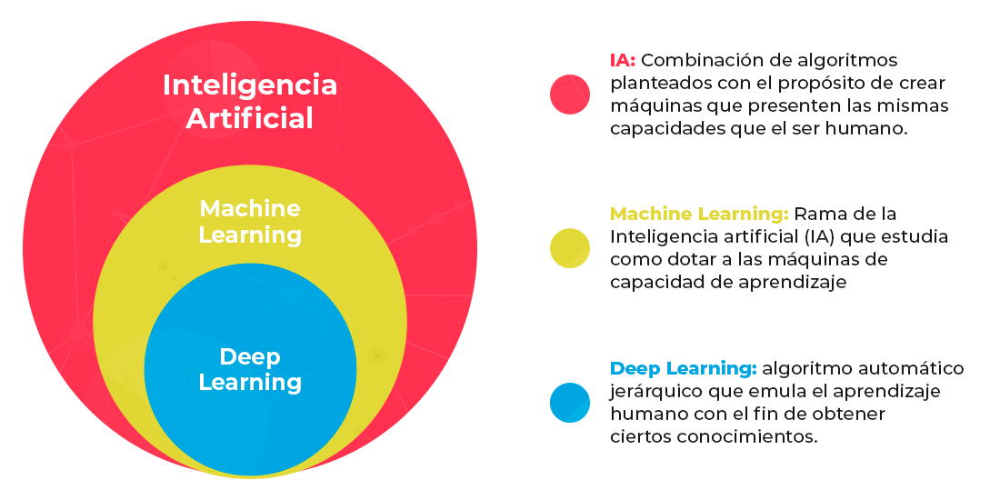
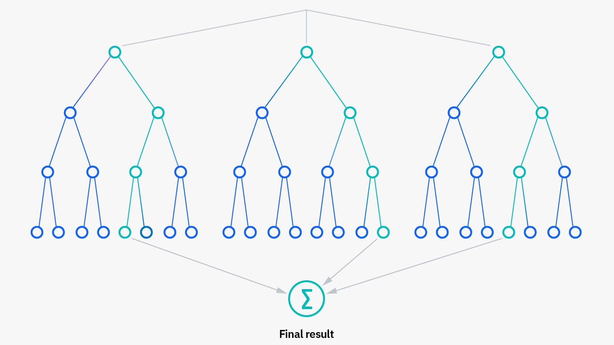
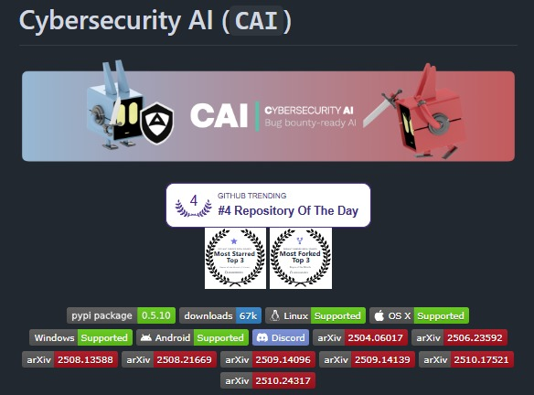
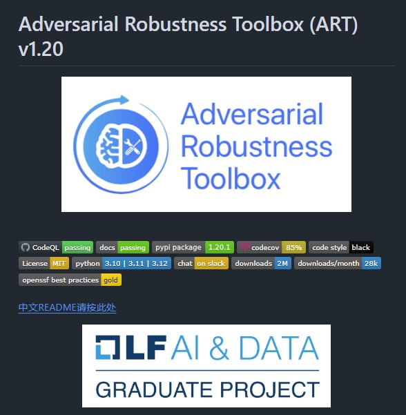

Los últimos avances en el campo del Machine Learning
Algoritmos inteligentes para el aprendizaje del equipo por medio de datos.
Algoritmos inteligentes para el aprendizaje del equipo por medio de datos.
El machine learning es el subconjunto de la inteligencia artificial (IA) centrado en algoritmos que pueden "aprender" los patrones de los datos de entrenamiento y, posteriormente, hacer inferencias precisas sobre nuevos datos. Esta capacidad de reconocimiento de patrones permite a los modelos de machine learning tomar decisiones o realizar predicciones sin instrucciones explícitas y codificadas de forma rígida.

Es un modelo ensemble formado por múltiples árboles de decisión. Usa bootstrap aggregation (bagging) y selección aleatoria de características
para construir cada árbol de forma
independiente, luego agrega sus predicciones para obtener un resultado más robusto y preciso.
Se aplica tanto a clasificación como regresión, y es especialmente útil para evitar el overfitting.
Support Vector Machine (SVM)
Es un potente algoritmo que busca un hiperplano en el espacio de características que separe mejor los datos, maximizando el margen entre los puntos de cada clase.Funciona tanto para clasificación binaria como multi-clase, y es muy efectivo en espacios de alta dimensión como análisis de texto o detección de intrusiones.
Es una técnica de aprendizaje no supervisado que agrupa datos en K clusters. El algoritmo parte de centros iniciales y asigna iterativamente cada punto al cluster más cercano, recalculando el centro de cada grupo hasta que los clusters se estabilizan.

cada registro tiene una respuesta conocida (ej. "spam / no spam"). Son la base del aprendizaje supervisado.
Datos
sin respuesta conocida. Los algoritmos de clustering dependen exclusivamente de los datos de entrada para
modelar la estructura subyacente y
descubrir patrones por sí solos, sin un "maestro" que indique las respuestas correctas.
tablas, bases de datos SQL, CSV.
imágenes, audio, texto libre, logs de red (muy comunes en ciberseguridad).

Es un framework ligero y open source que permite construir y desplegar agentes de IA para automatización ofensiva y defensiva en ciberseguridad. Incluye herramientas integradas de reconocimiento, explotación y escalada de privilegios, y ha sido probado en CTFs de HackTheBox y programas de bug bounty

Es una librería Python para defensa de modelos de ML contra amenazas adversariales, mantenida por la Linux AI & Data Foundation. Protege contra ataques de evasión, envenenamiento de datos y extracción de modelos mediante defensas preconstruidas y herramientas de red/blue teaming.